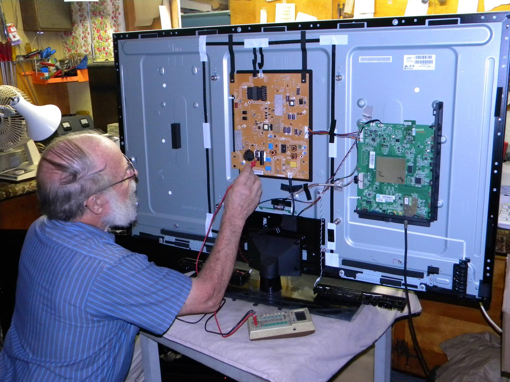
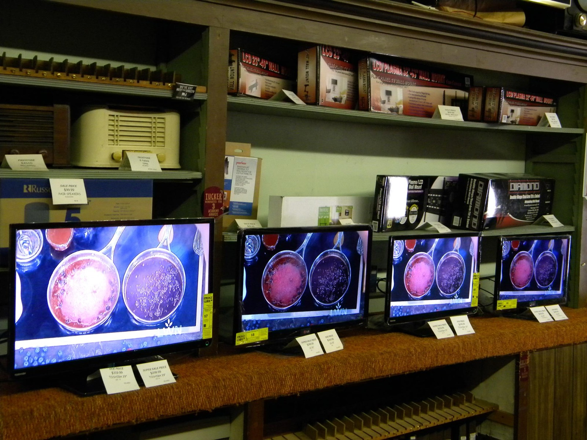

Repair & Sales
Maintenance, delivery and more.
Weimer Electronics is the one-stop for electronics: the items, plus everything you need with them. Maintenance, installation and repair.
Television repair
Bring your TV in. Weimer's repair work covers today's sets and isn't limited to later models.
Antique radio & record player repair
Old radios and record players are welcome at the bench. Bring them in, too.
Maintenance
Electronics you can enjoy and keep maintained: maintenance to go with what you buy.
On-site installation
On-site installation for your new equipment, plus help designing your home movie theater.
Free basic TV installation
Free basic installation for television services.
Free local delivery
Free local delivery for the electronics you buy at Weimer. Ask about delivery and installation options.
Emergency services
Emergency services are available. For faster service, call 937-996-6331.
Help choosing TV service
Not sure what kind of television service and equipment is best for you? Weimer helps with each step.

At the bench
Repairs aren't limited to later models.
From a modern flat screen opened up on the bench to an antique radio chassis, Weimer Electronics keeps your electronics working. Bring in your old TVs and radios, too!
Call about a repair
Authorized LG dealerOur products include
See what we have in stock.
Get what you need to equip your home with essential devices. Weimer has been selling electronics for a long time and keeps a wide stock. Come by and see the home entertainment selection.
- TVs
- LCD + LED/LCD + HD TVs
- Flat screens
- Home theater
- DVD players
- Radios
- Antennas
- Speakers
FAQ
Good to know.
Do you repair older TVs and radios?
Yes. Weimer Electronics' repair and maintenance services are not limited to later models. Bring in your old TVs and radios, too, including antique radios and record players.
Do you deliver?
Yes. Weimer Electronics offers free local delivery for the electronics it sells. Call about delivery and installation options.
Is installation included?
Weimer Electronics offers free basic installation for television services, and on-site installation is available. Call 937-996-6331 to talk through your setup.
Which TV brand do you carry?
Weimer Electronics is an authorized dealer for LG electronics. Visit the store to see the current stock.
What areas do you serve?
Darke County and Preble County in Ohio, as well as Union City, Indiana. The store is at 111 N. Main Street in New Madison, OH.
When are you open?
Monday to Friday 9:00 AM – 5:00 PM, Saturday 9:00 AM – 12:00 PM, closed Sunday.